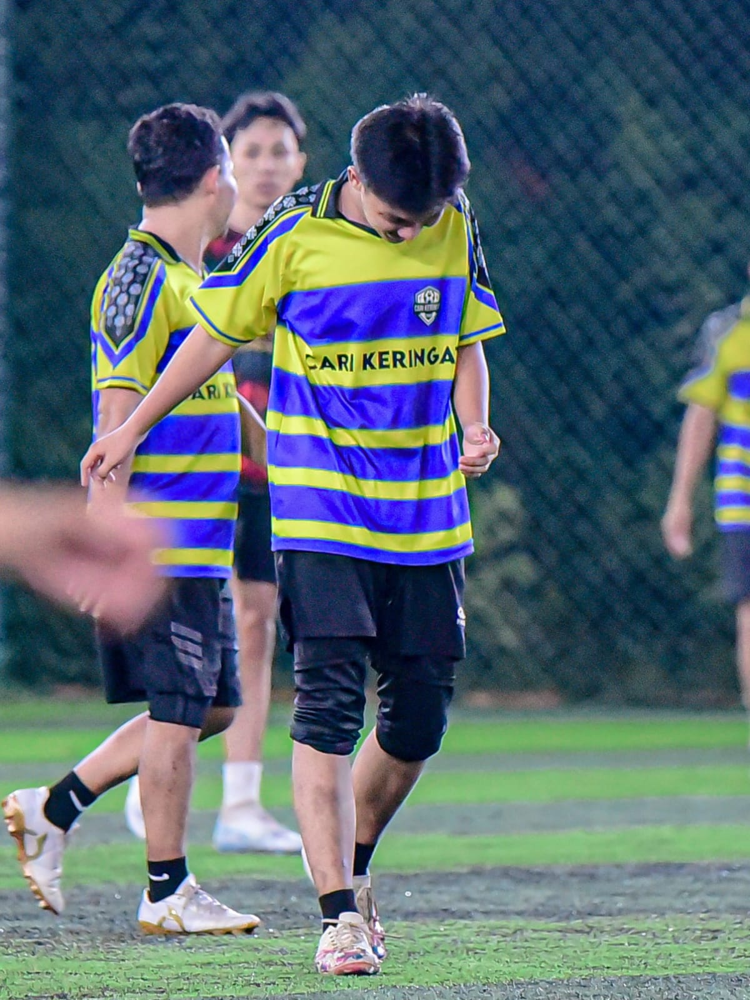
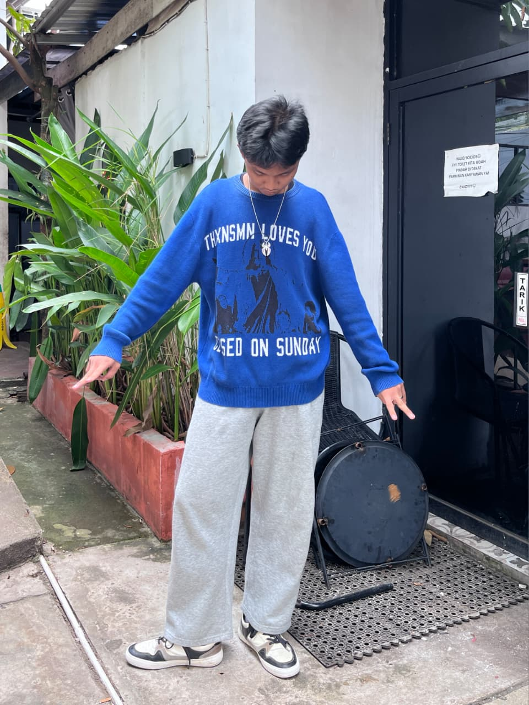

Ican
Hello! I am Muhammad Ikhsan Akbar, a Management Informatics student at Politeknik Negeri Sriwijaya. Since my background is in IT, I’m dedicated to leveling up my skills in programming, business analysis, and English.
This website was built as my first platform to put what I've learned into practice. Moving forward, I look forward to growing further, boosting my work efficiency, and honing my skills for the future.
Halo! Saya Muhammad Ikhsan Akbar, seorang mahasiswa program studi Manajemen Informatika di Politeknik Negeri Sriwijaya. Sebagai mahasiswa yang berbasis IT, saya terus berupaya meningkatkan skill dalam programming, analisis kebutuhan bisnis, dan bahasa Inggris.
Website ini dibuat sebagai wadah perdana untuk mengaplikasikan hal yang saya pelajari dalam beberapa waktu. Seiring berjalannya waktu, saya berharap dapat terus berkembang, meningkatkan efisiensi kerja, dan mengasah kemampuan saya untuk ke depannya.

